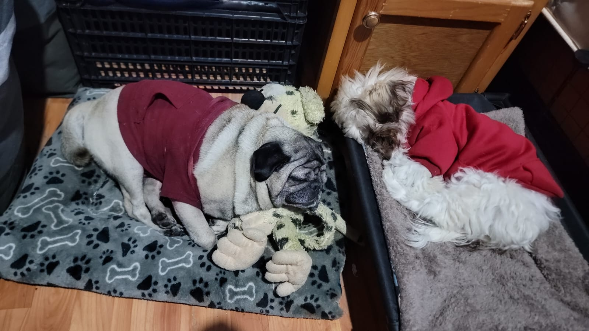
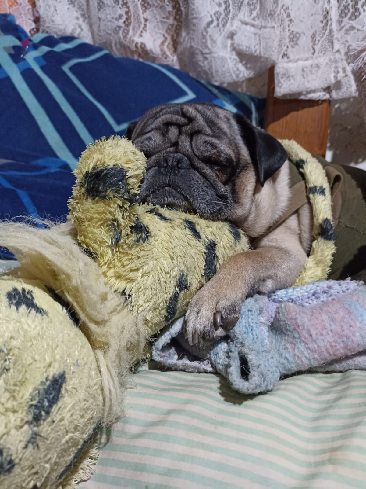
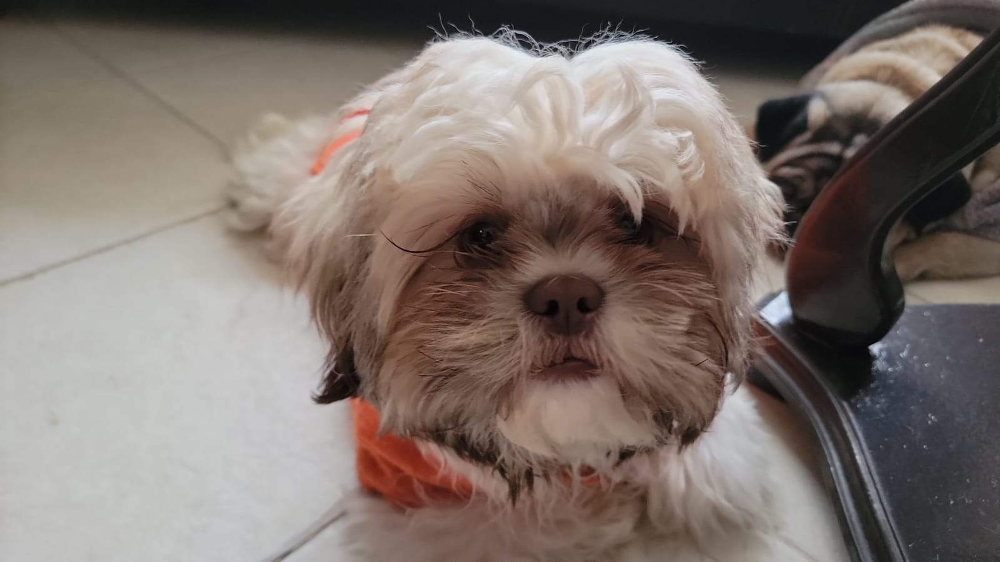
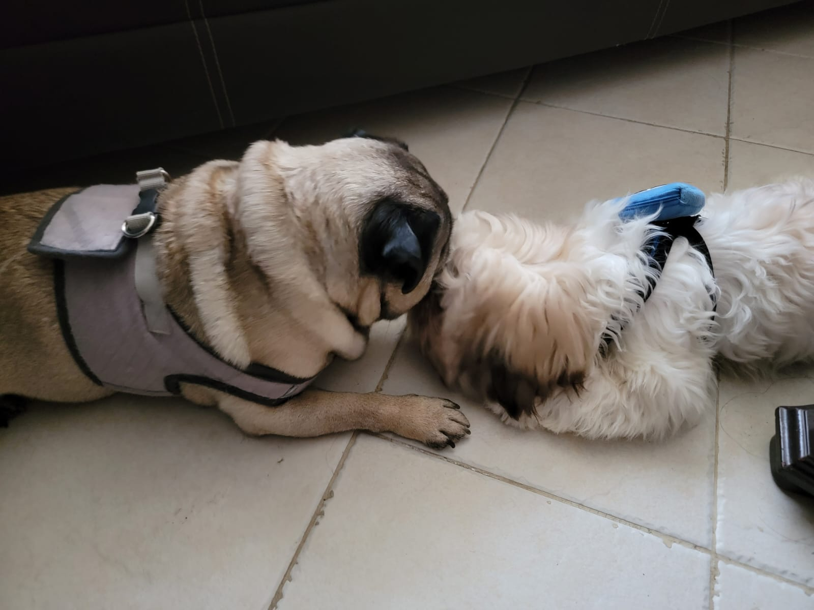

¡Bienvenidos al mundo de Mikey y Kiwi!
Creo que esta es una de mis secciones favoritas de toooooda la página, por fin puedo presentar a mis dos soles en la vida y a mis mejores amigos. Aunque uno de ellos lleva más tiempo conmigo que el otro, creo que ellos han alegrado mi vida significativamente. Siempre he sido una persona más de perros que de cualquier otro animal, por alguna razón, siempre logro tener una afinidad hacia ellos y creo que el sentimiento de querernos es mutuo. Cuando era pequeña, llegué a tener hasta 12 perros aunque claramente no eran del todo míos pues quienes los cuidaban eran mis abuelos pero eso me hizo saber que quería un compañero de vida, ¿y qué es mejor que uno solo? Dos perritos. Es por eso que, te presento a Mikey y Kiwi, y te doy la bienvenida a su pequeño (gran) mundo.

¿Quiénes son ellos?
Mikey
Primero, hay que conocer al más viejito de ambos, ese es Mikey, él es un Pug de siete años y medio aproximadamente, ha pasado conmigo desde que tengo catorce años y definitivamente es mi mejor amigo en todo el mundo. No sé muy bien como explicarlo pero Mikey llegó a mi vida en un momento en dónde yo estaba muy perdida y aunque no está capacitado como un perro de apoyo emocional, es prácticamente lo que es para mí. Lo he visto en sus mejores momentos, en sus peores y hemos compartido tantas cosas que honestamente, no creo que logre replicar este sentimiento con alguna otra mascota. Para mí, Mikey es más que solo mi mascota.
Sé que decir algo así suena demasiado cursi y es hasta gracioso leerlo, pero es la verdad. Pero dejándonos de sentimentalismos, hablemos del por qué se llama Mikey porque es una historia un poco interesante al menos desde mi punto de vista. Yo siempre he sido fan de una banda llamada 5 Seconds Of Summer y mi integrante favorito se llama Michael, pero sentía que llamarle así a mi perro iba a ser bastante extraño, y como muchos le dicen de cariño así al guitarrista (mi integrante favorito) realmente no lo pensé mucho y se le quedó, además de que siento que es un nombre poco común y me gusta, suena muy bonito cuando lo digo.
Ahora, ¿cuál es la personalidad de Mikey?, siento que siempre se tiene el estigma de que los pugs son perros activos y bastante hiperactivos pero en realidad, Mikey es toooodo lo contrario, es un perro demasiado tranquilo y noble, aunque no niego que se ha vuelto inclusive un perro un tanto huraño con el paso del tiempo, si te ganas su cariño él nunca te abandonará. Otros datos interesantes que te puedo dar sobre é es que su actividad favorita es dormir, adora las cobijas y jergas, tiene muchísimos peluches y me sigue a todos lados porque no le gusta estar solo.
Kiwi
Y ahora es momento de presentar al más pequeño de la familia, su nombre es Kiwi, es un Shih-tzu de apenas unos 5 meses y es prácticamente el alma de la casa. La historia de cómo llegó es bastante curiosa pues a pesar de su corta edad, Kiwi ya recorrió el país de norte a centro. Él es hijo de una pareja de Shih-tzus que tiene la novia de mi hermano y decidimos adoptarlo porque queríamos que Mikey tuviera más compañía, además de que un cachorro siempre te alegra la vida y definitivamente ese es el caso de Kiwi. Así que sí, él viajó desde Monclova hasta Tlaxcala para conocer a su nuevo hogar y familia y aunque podría parecer pesado, ha sido todo lo contrario tenerlo con nosotros.
Su personalidad es un muy juguetona, tal vez es por la edad pero Kiwi siempre está corriendo de un lado al otro y termina por entretenerse a sí mismo, además de que es demasiado necio y no suele seguir órdenes (como cualquier cachorro), normalmente si está de buen humor, te hará caso, sino lo está, probablemente simplemente te ignore. Algunos datos que te puedo dar sobre Kiwi es que él adora los juguetes y su lugar favorito para dormir son los zapatos de sus humanos, es muy dormilón y juguetón y además tiene zoomies todo el tiempo.
Caminar, la forma de conectarlos

Cuando Mikey llegó a nuestras vidas, en realidad nunca tuvo que compartir sus cosas así que cuando Kiwi llegó a nuestra vida, fue bastante difícil hacer que lo aceptara. Además, los primeros días que logramos que convivieran, al principio Kiwi le tenía mucho miedo a Mikey y después fue viceversa. Honestamente, hubo mucho tiempo en el que yo me desesperé porque solo quería que ellos convivieran sin necesidad de tener que regañarlos constantemente o cuidar todo lo que hicieran. Pero afortunadamente, mi familia y yo encontramos una solución un poco más viable, la cuál es: caminar.
Aunque realmente no voy a mentir, no fue todo hojuelas sobre miel. Kiwi al ser un perro poco experimentado, primero tuvimos que enseñarle a caminar con correa mientras que Mikey, al ser un perro bastante territorial tuvimos que enseñarle que estaba bien que cualquier perro se le acercara mientras caminara.
Al principio, mi hermano y yo tuvimos que sacar a pasearlos juntos pero ambos iban con una persona diferente y aunque Mikey más de una vez se quejó de nosotros, insistimos en seguir sacándolos a pasear al menos hasta que ambos aceptaran la idea de que tendrían que convivir por el resto de su vida. Y poco a poco fue dando resultados hasta que logramos que caminaran uno al lado de otro por un buen rato, esta vez sin quejas o reproches de Mikey e increíblemente, Kiwi se veía muy feliz por caminar con alguien mayor que él (yo pienso que Kiwi ve a Mikey como su papá o algo así).
Finalmente, y nuestro mayor logro, es que ambos pueden caminar con la misma persona, a lado uno del otro sin enojarse y de hecho, ya es parte de su rutina salir a caminar. Puedes ver un ejemplo en el gif de esta sección.
Entonces, ¿cómo es la convivencia ahora?
Es bastante amena, aún no logramos que ellos se amen con locura o busquen pasar todo el tiempo juntos (al menos de parte de Mikey) pero definitivamente se soportan más el uno con el otro y yo lo considero un proceso bastante significativo considerando que la primera noche juntos, Kiwi se hizo del baño del miedo y Mikey se enojó por un nuevo perro en la casa.
Aquí te dejo una lista de actividades que ahora ellos hacen juntos sin problemas por si tienes curiosidad:
- Jugar
- Comer
- Salir a caminar
- Acurrucarse juntos
- Estar en la misma habitación
- Compartir juguetes
- Compartir pertenencias como lo son su casa, premios, entre otros
Si tengo algún otro avance, prometo actualizarlo aquí lo más rápido posible.
Filtro de imagen
Pasemos a una parte divertida, ¿por qué no jugamos un poco con los filtros de imagen de alguna foto de ellos?
